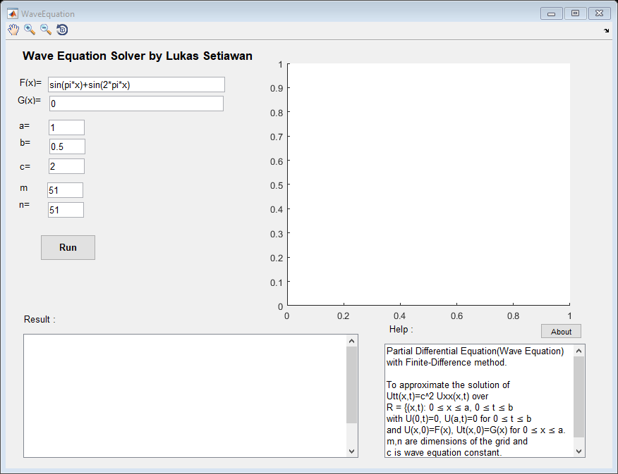

function varargout = WaveEquation(varargin) % WAVEEQUATION MATLAB code for WaveEquation.fig % WAVEEQUATION, by itself, creates a new WAVEEQUATION or raises the existing % singleton*. % % H = WAVEEQUATION returns the handle to a new WAVEEQUATION or the handle to % the existing singleton*. % % WAVEEQUATION('CALLBACK',hObject,eventData,handles,...) calls the local % function named CALLBACK in WAVEEQUATION.M with the given input arguments. % % WAVEEQUATION('Property','Value',...) creates a new WAVEEQUATION or raises the % existing singleton*. Starting from the left, property value pairs are % applied to the GUI before WaveEquation_OpeningFcn gets called. An % unrecognized property name or invalid value makes property application % stop. All inputs are passed to WaveEquation_OpeningFcn via varargin. % % *See GUI Options on GUIDE's Tools menu. Choose "GUI allows only one % instance to run (singleton)". % % See also: GUIDE, GUIDATA, GUIHANDLES % Edit the above text to modify the response to help WaveEquation % Last Modified by GUIDE v2.5 02-Aug-2018 16:33:18 % Begin initialization code - DO NOT EDIT gui_Singleton = 1; gui_State = struct('gui_Name', mfilename, ... 'gui_Singleton', gui_Singleton, ... 'gui_OpeningFcn', @WaveEquation_OpeningFcn, ... 'gui_OutputFcn', @WaveEquation_OutputFcn, ... 'gui_LayoutFcn', [] , ... 'gui_Callback', []); if nargin && ischar(varargin{1}) gui_State.gui_Callback = str2func(varargin{1}); end if nargout [varargout{1:nargout}] = gui_mainfcn(gui_State, varargin{:}); else gui_mainfcn(gui_State, varargin{:}); end % End initialization code - DO NOT EDIT % --- Executes just before WaveEquation is made visible. function WaveEquation_OpeningFcn(hObject, eventdata, handles, varargin) % This function has no output args, see OutputFcn. % hObject handle to figure % eventdata reserved - to be defined in a future version of MATLAB % handles structure with handles and user data (see GUIDATA) % varargin command line arguments to WaveEquation (see VARARGIN) % Choose default command line output for WaveEquation handles.output = hObject; % Update handles structure guidata(hObject, handles); % UIWAIT makes WaveEquation wait for user response (see UIRESUME) % uiwait(handles.figure1); % --- Outputs from this function are returned to the command line. function varargout = WaveEquation_OutputFcn(hObject, eventdata, handles) % varargout cell array for returning output args (see VARARGOUT); % hObject handle to figure % eventdata reserved - to be defined in a future version of MATLAB % handles structure with handles and user data (see GUIDATA) % Get default command line output from handles structure varargout{1} = handles.output; function editF_Callback(hObject, eventdata, handles) % hObject handle to editF (see GCBO) % eventdata reserved - to be defined in a future version of MATLAB % handles structure with handles and user data (see GUIDATA) % Hints: get(hObject,'String') returns contents of editF as text % str2double(get(hObject,'String')) returns contents of editF as a double % --- Executes during object creation, after setting all properties. function editF_CreateFcn(hObject, eventdata, handles) % hObject handle to editF (see GCBO) % eventdata reserved - to be defined in a future version of MATLAB % handles empty - handles not created until after all CreateFcns called % Hint: edit controls usually have a white background on Windows. % See ISPC and COMPUTER. if ispc && isequal(get(hObject,'BackgroundColor'), get(0,'defaultUicontrolBackgroundColor')) set(hObject,'BackgroundColor','white'); end function editG_Callback(hObject, eventdata, handles) % hObject handle to editG (see GCBO) % eventdata reserved - to be defined in a future version of MATLAB % handles structure with handles and user data (see GUIDATA) % Hints: get(hObject,'String') returns contents of editG as text % str2double(get(hObject,'String')) returns contents of editG as a double % --- Executes during object creation, after setting all properties. function editG_CreateFcn(hObject, eventdata, handles) % hObject handle to editG (see GCBO) % eventdata reserved - to be defined in a future version of MATLAB % handles empty - handles not created until after all CreateFcns called % Hint: edit controls usually have a white background on Windows. % See ISPC and COMPUTER. if ispc && isequal(get(hObject,'BackgroundColor'), get(0,'defaultUicontrolBackgroundColor')) set(hObject,'BackgroundColor','white'); end function edita_Callback(hObject, eventdata, handles) % hObject handle to edita (see GCBO) % eventdata reserved - to be defined in a future version of MATLAB % handles structure with handles and user data (see GUIDATA) % Hints: get(hObject,'String') returns contents of edita as text % str2double(get(hObject,'String')) returns contents of edita as a double % --- Executes during object creation, after setting all properties. function edita_CreateFcn(hObject, eventdata, handles) % hObject handle to edita (see GCBO) % eventdata reserved - to be defined in a future version of MATLAB % handles empty - handles not created until after all CreateFcns called % Hint: edit controls usually have a white background on Windows. % See ISPC and COMPUTER. if ispc && isequal(get(hObject,'BackgroundColor'), get(0,'defaultUicontrolBackgroundColor')) set(hObject,'BackgroundColor','white'); end function editb_Callback(hObject, eventdata, handles) % hObject handle to editb (see GCBO) % eventdata reserved - to be defined in a future version of MATLAB % handles structure with handles and user data (see GUIDATA) % Hints: get(hObject,'String') returns contents of editb as text % str2double(get(hObject,'String')) returns contents of editb as a double % --- Executes during object creation, after setting all properties. function editb_CreateFcn(hObject, eventdata, handles) % hObject handle to editb (see GCBO) % eventdata reserved - to be defined in a future version of MATLAB % handles empty - handles not created until after all CreateFcns called % Hint: edit controls usually have a white background on Windows. % See ISPC and COMPUTER. if ispc && isequal(get(hObject,'BackgroundColor'), get(0,'defaultUicontrolBackgroundColor')) set(hObject,'BackgroundColor','white'); end function editc_Callback(hObject, eventdata, handles) % hObject handle to editc (see GCBO) % eventdata reserved - to be defined in a future version of MATLAB % handles structure with handles and user data (see GUIDATA) % Hints: get(hObject,'String') returns contents of editc as text % str2double(get(hObject,'String')) returns contents of editc as a double % --- Executes during object creation, after setting all properties. function editc_CreateFcn(hObject, eventdata, handles) % hObject handle to editc (see GCBO) % eventdata reserved - to be defined in a future version of MATLAB % handles empty - handles not created until after all CreateFcns called % Hint: edit controls usually have a white background on Windows. % See ISPC and COMPUTER. if ispc && isequal(get(hObject,'BackgroundColor'), get(0,'defaultUicontrolBackgroundColor')) set(hObject,'BackgroundColor','white'); end function editm_Callback(hObject, eventdata, handles) % hObject handle to editm (see GCBO) % eventdata reserved - to be defined in a future version of MATLAB % handles structure with handles and user data (see GUIDATA) % Hints: get(hObject,'String') returns contents of editm as text % str2double(get(hObject,'String')) returns contents of editm as a double % --- Executes during object creation, after setting all properties. function editm_CreateFcn(hObject, eventdata, handles) % hObject handle to editm (see GCBO) % eventdata reserved - to be defined in a future version of MATLAB % handles empty - handles not created until after all CreateFcns called % Hint: edit controls usually have a white background on Windows. % See ISPC and COMPUTER. if ispc && isequal(get(hObject,'BackgroundColor'), get(0,'defaultUicontrolBackgroundColor')) set(hObject,'BackgroundColor','white'); end function editn_Callback(hObject, eventdata, handles) % hObject handle to editn (see GCBO) % eventdata reserved - to be defined in a future version of MATLAB % handles structure with handles and user data (see GUIDATA) % Hints: get(hObject,'String') returns contents of editn as text % str2double(get(hObject,'String')) returns contents of editn as a double % --- Executes during object creation, after setting all properties. function editn_CreateFcn(hObject, eventdata, handles) % hObject handle to editn (see GCBO) % eventdata reserved - to be defined in a future version of MATLAB % handles empty - handles not created until after all CreateFcns called % Hint: edit controls usually have a white background on Windows. % See ISPC and COMPUTER. if ispc && isequal(get(hObject,'BackgroundColor'), get(0,'defaultUicontrolBackgroundColor')) set(hObject,'BackgroundColor','white'); end function editResult_Callback(hObject, eventdata, handles) % hObject handle to editResult (see GCBO) % eventdata reserved - to be defined in a future version of MATLAB % handles structure with handles and user data (see GUIDATA) % Hints: get(hObject,'String') returns contents of editResult as text % str2double(get(hObject,'String')) returns contents of editResult as a double % --- Executes during object creation, after setting all properties. function editResult_CreateFcn(hObject, eventdata, handles) % hObject handle to editResult (see GCBO) % eventdata reserved - to be defined in a future version of MATLAB % handles empty - handles not created until after all CreateFcns called % Hint: edit controls usually have a white background on Windows. % See ISPC and COMPUTER. if ispc && isequal(get(hObject,'BackgroundColor'), get(0,'defaultUicontrolBackgroundColor')) set(hObject,'BackgroundColor','white'); end % --- Executes on button press in Runbutton. function Runbutton_Callback(hObject, eventdata, handles) % hObject handle to Runbutton (see GCBO) % eventdata reserved - to be defined in a future version of MATLAB % handles structure with handles and user data (see GUIDATA) % Wave Equation Solver by Lukas Setiawan (e-mail: lukassetiawan@yahoo.com) clc a=str2double(get(handles.edita,'String')); b=str2double(get(handles.editb,'String')); c=str2double(get(handles.editc,'String')); m=str2double(get(handles.editm,'String')); n=str2double(get(handles.editn,'String')); if (m~=n) msgbox('Dimension of the grid (m & n) must be the same !!!') stop; end h=a/(n-1); k=b/(m-1); r=(c*k)/h; r2=r*r; r22=(r*r)/2; s1=1-(r*r); s2=2-(2*r*r); F=get(handles.editF,'String'); Fx=str2func(['@(x)' F]); G=get(handles.editG,'String'); Gx=str2func(['@(x)' G]); F3=zeros(m); % to initialize array G3=zeros(n); for i=2:n-1 x=h*(i-1); F3(i)=Fx(x); G3(i)=Gx(x); end; for j=1:m u(1,j)=0; u(n,j)=0; end; for i=2:n-1 u(i,1)=F3(i); u(i,2)=s1*F3(i)+k*G3(i)+r22*(F3(i+1)+F3(i-1)); end; for j=3:m for i=2 :n-1 u(i,j)=s2*u(i,j-1)+r2*(u(i-1,j-1)+u(i+1,j-1))-u(i,j-2); end; end; o=''; p=0; for j=1 : n for i=1 : m p=p+1; x=h*(i-1); t=k*(j-1); o=[o sprintf('%i %20f %20f %25e \n',p,x,t,u(i,j))]; end; end; o2=[sprintf('%5s %16s %25s %27s \n','i','x','t','U'),o]; set(handles.editResult,'String',o2); %Graph for i=1 : m x(i)=h*(i-1); end; for j=1 : n t(j)=k*(j-1); end; surf(x,t,u); xlabel('x','FontSize', 15); ylabel('t','FontSize', 15); zlabel('U','FontSize', 15); grid on; axes(handles.axes1); % --- Executes on button press in pushbutton2. function pushbutton2_Callback(hObject, eventdata, handles) % hObject handle to pushbutton2 (see GCBO) % eventdata reserved - to be defined in a future version of MATLAB % handles structure with handles and user data (see GUIDATA) function edit9_Callback(hObject, eventdata, handles) % hObject handle to edit9 (see GCBO) % eventdata reserved - to be defined in a future version of MATLAB % handles structure with handles and user data (see GUIDATA) % Hints: get(hObject,'String') returns contents of edit9 as text % str2double(get(hObject,'String')) returns contents of edit9 as a double % --- Executes during object creation, after setting all properties. function edit9_CreateFcn(hObject, eventdata, handles) % hObject handle to edit9 (see GCBO) % eventdata reserved - to be defined in a future version of MATLAB % handles empty - handles not created until after all CreateFcns called % Hint: edit controls usually have a white background on Windows. % See ISPC and COMPUTER. if ispc && isequal(get(hObject,'BackgroundColor'), get(0,'defaultUicontrolBackgroundColor')) set(hObject,'BackgroundColor','white'); end % --- Executes on button press in pushbutton3. function pushbutton3_Callback(hObject, eventdata, handles) % hObject handle to pushbutton3 (see GCBO) % eventdata reserved - to be defined in a future version of MATLAB % handles structure with handles and user data (see GUIDATA) line{1}='Wave Equation Solver'; line{2}='Version 1.0 - build Aug 2, 2018 with Matlab'; line{3}='Created by Lukas Setiawan'; line{4}='www.metodenumeriku.blogspot.com'; line{5}='Facebook search: Metode Numerik-Plus Programnya'; line{6}='lukassetiawan@yahoo.com'; line{7}='My other works:'; line{8}=('https://bitbucket.org/nixz97/nix/downloads/'); %disp('<a href="https://bitbucket.org/nixz97/nix/downloads/)">go</a>'); line{9}=''; line{10}='Educational background :'; line{11}='1. SD IPPOR Eretan Wetan-Kandanghaur-Indramayu'; line{12}='2. SMP Negeri Kandanghaur'; line{13}='3. SMA BOPKRI I {BOSA} Yogyakarta'; line{14}='4. Teknik Kimia Angkatan 94 {NRP 6294015) Universitas Parahyangan Bandung'; line{15}='5. Teknik Informatika STMIK Indonesia Mandiri Bandung {NIM 36026084)'; line{16}=''; line{17}='Accepting donations for software development.'; msgbox(line,'About','none');